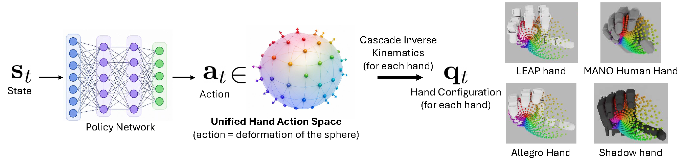
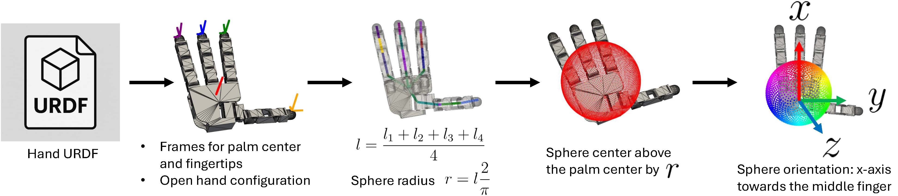
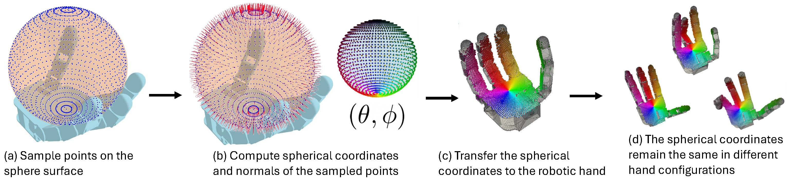
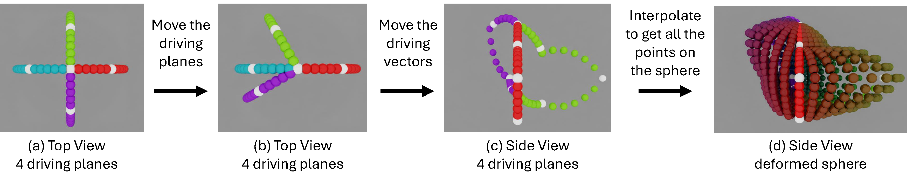
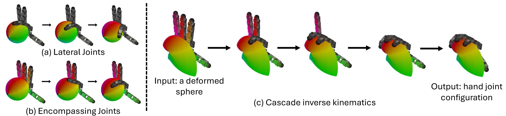
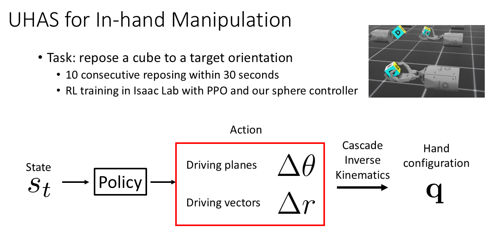
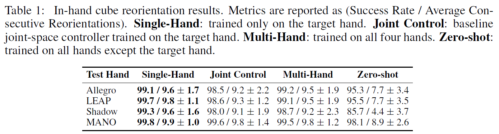

Robot manipulation policies are typically tied to specific robotic hand embodiments, limiting the transfer of learned behaviors across platforms with different kinematic structures. In this work, we propose the Unified Hand Action Space (UHAS), a sphere-based unified action representation for cross- embodiment dexterous manipulation. UHAS represents robotic hand actions as geometric deformations of a canonical sphere and uses a Cascade Inverse Kine- matics (CIK) algorithm to map the shared representation to embodiment-specific joint configurations. Using reinforcement learning, we train dexterous manipula- tion policies directly in the proposed action space for in-hand cube reorientation tasks. We evaluate our method in both simulation and real-world experiments across multiple robotic hands, including the Allegro Hand, LEAP Hand, Shadow Hand, and MANO Human Hand. Experimental results demonstrate effective dex- terous manipulation, zero-shot transfer to unseen hands, rapid finetuning across embodiments, and successful real-world deployment. Our experiments show that the proposed UHAS representation enables stable dexterous control and cross- embodiment policy transfer across robotic hands.

In our unified hand action space, an action is represented as the deformation of a canonical sphere. A deformed sphere is mapped to hand configurations of various embodiments (LEAP, Allegro, MANO Human and Shadow).

Illustration of the process of creating a sphere for a robotic hand given its URDF.

Construction of the unified hand surface correspondence.

Sphere deformation parameterization in the Unified Hand Action Space (UHAS). (a) Initial configuration of four driving planes. (b) Rotating the driving planes controls the lateral deformation Δθ. (c) Radial displacement of the driving vectors controls Δr. (d) The final deformed sphere reconstructed through interpolation.

We classify hand joints into (a) lateral joints and (b) encompassing joints and; (c) Illustra- tion of the cascade inverse kinematics algorithm on a deformed sphere.

We evaluate our method on the task of in-hand cube reorientation in both simulation and the real world.

We evaluate dexterous manipulation on LEAP Hand and Allegro Hand in real-world in-hand cube reorientation tasks.
@misc{casas2026crossembodiment,
title={Cross-Embodiment Robot Manipulation via a Unified Hand Action Space},
author={Luis Felipe Casas and Robert Teal and Keval Shah and Abhijit Tadepalli and Wanxin Jin and Yu Xiang},
year={2026},
eprint={2607.03570},
archivePrefix={arXiv},
primaryClass={cs.RO},
url={https://arxiv.org/abs/2607.03570}
}
Send any comments or questions to Luis Felipe Casas:
Luis.CasasMurillo@utdallas.edu
This work was supported in part by the National Science Foundation (NSF) under Grant Nos. 2346528 and 2520553, the NVIDIA Academic Grant Program Award, and a gift funding from XPeng.